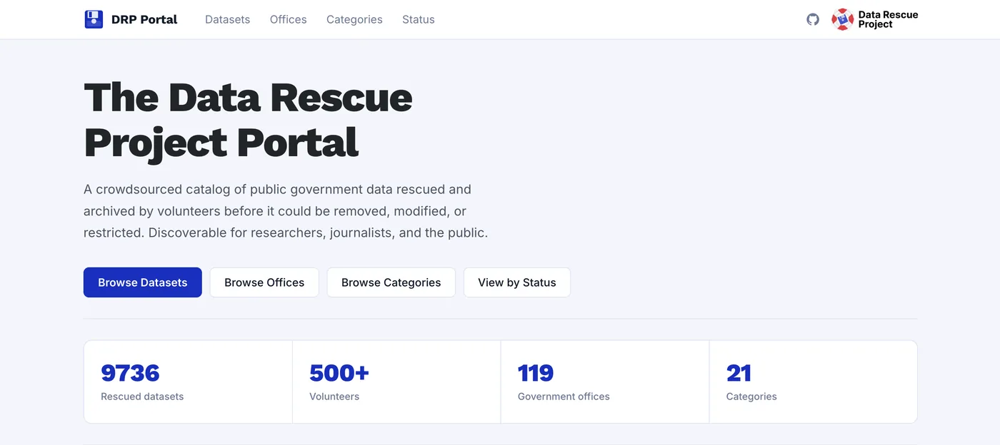

Case study · Federal data
Making at-risk federal data findable
How a spreadsheet of rescued government datasets became a searchable public archive, and what a deploy pipeline taught me along the way.

The problem
Volunteers with the Data Rescue Project were saving federal datasets at risk of disappearing, but the results lived in a spreadsheet. Researchers and journalists had no practical way to find what had been saved.
What I built
- Moved the spreadsheet of 2,900+ datasets into a searchable static site built with Jekyll
- Built navigation across 21 sectors, so people can browse by topic instead of guessing dataset names
- Built the homepage, dataset cards and responsive layouts, including the mobile navigation
What I'd do differently
I was tasked with adding pagination. I tried it two ways, first with Jekyll's paginator and then in the site's JavaScript, but neither showed up on the live site. With launch close, I removed it and shipped search and sector navigation instead, so people could find datasets on day one.
Later, a teammate found the cause: our GitHub Actions workflow only ran the Jekyll build and never compiled the site's JavaScript, so none of my script changes ever reached production. One added build step fixed it. Now, when a change doesn't show up live, I check what the deploy pipeline actually builds before I question the code, and I ask for a second set of eyes sooner.
Outcome
The portal was covered by The New York Times in September 2025 ↗.